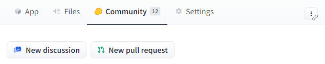
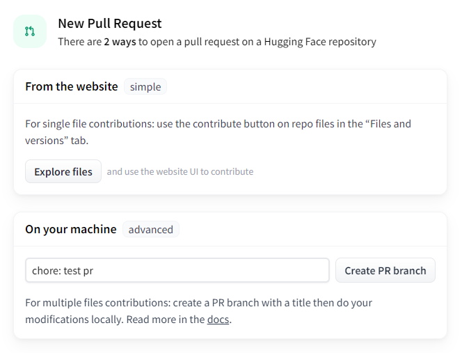
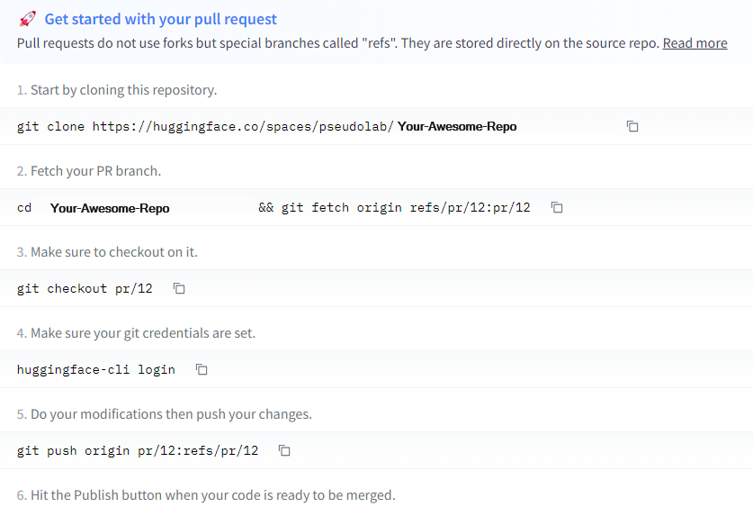
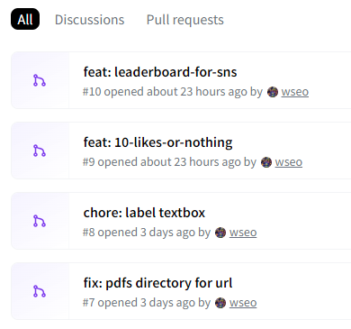

03_기여 및 제출
이제부터는 커뮤니티와의 소통과 평가 과정을 통해 프로젝트의 가치를 더욱 높일 수 있는 단계입니다. 해커톤은 서로의 작업을 공유하고 성장할 수 있는 소중한 기회이니만큼 적극적인 참여 부탁드려요!
프로젝트에 기여하기
먼저 흥미있는 프로젝트의 Community 탭을 방문해서 New Pull Request 버튼을 클릭하세요.

여러분이 기여하고자 하는 내용을 명확히 전달하기 위해, 새 창에서 나타나는 커밋 메시지 부분에 계획하는 작업의 개요를 간단명료하게 작성해 주세요. 이렇게 하면 나중에 프로젝트 기여 내역을 파악하기가 훨씬 수월해집니다.

화면에 보이는 것처럼 로컬 환경에서 작업할 수 있도록 clone, fetch, checkout을 해주세요.

액세스 토큰 생성과 로그인 과정
이어서, 여러분의 Hugging Face 계정으로 액세스 토큰을 만들어 로그인하는 단계가 필요합니다. 이 토큰은 여러분의 작업을 인증하고 보호하는 역할을 해요. 자세한 설명은 영문 가이드를 참조하시길 바랍니다.

로그인이 제대로 되었는지 확인하려면 터미널에서 huggingface-cli whoami 명령어를 실행하시면 됩니다.
작업 공유와 커밋
프로젝트를 진행하며 중요한 단계마다 커밋을 하고, 이를 푸시해서 커뮤니티와 계속 소통하세요. 이 과정을 통해 여러분의 작업 진척 상황을 투명하게 공유할 수 있어요.

README 작성하기
프로젝트의 README 파일은 누구나 프로젝트를 쉽게 이해할 수 있도록 상세하게 작성해야 해요. 프로젝트의 목적, 사용된 기술, 주요 변경 사항 등을 포함하여, 이 프로젝트에 대한 충분한 정보를 제공해 주세요.
해커톤 및 평가 일정 확인
프로젝트 제출 이후, 전체 해커톤 기간인 3주 동안 여러분의 프로젝트는 커뮤니티의 리뷰와 평가를 받게 됩니다. 이 기간에 프로젝트의 질을 보증하고 부정행위를 방지하기 위해, 팀별로 적어도 (팀원 수 + 2)개의 ’좋아요’를 받아야 수료증이 발급된다는 점, 잊지 마세요!